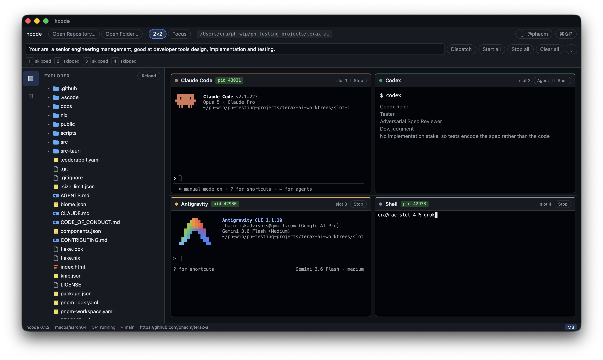

Spec Owner
ClaudeWrites the contract and freezes the scope.
Featured approach / role-based software lifecycle
A disciplined SDLC for coding agents: one role writes the specification, another attacks it, tests arrive before implementation, and a deterministic gate measures the repository before anything merges.
Each stage has one job, one accountable role, and one handoff. The sequence makes disagreement visible before it becomes an expensive bug.
Writes the contract and freezes the scope.
Challenges ambiguity before code exists.
Writes tests blind to the implementation.
Builds against the frozen spec and tests.
Reviews the diff against the contract.
Runs checks in a controlled environment.
Measures the repository and emits the merge verdict.
After L2 review, the contract is versioned. L3 writes against that frozen artifact; later roles may surface defects, but they do not silently rewrite the target.

Real terminals, a resizable usage panel, source control, and a visible integration queue—inside the hcode desktop app.
hcode fans one repository into four sibling Git worktrees, each on a predictable hcode/slot-N branch. Agents can work in parallel without sharing an index, overwriting each other’s files, or turning your main checkout into a staging area.
↳ Four isolated slots. One repository you still control.A dedicated Source Control & Conflicts view shows every slot’s changed files, side-by-side diffs, branch state, and cross-worktree collision alerts. Review, commit, merge, squash, cherry-pick, or resync from base without losing the thread of the work.
↳ Preview the merge. Then make the call.Assign agents distinct, falsifiable roles instead of asking each one to do everything. Claude owns the specification and reviews the diff; Codex pressure-tests the spec and writes tests before code; Antigravity implements and runs the execution harness. A deterministic gate—not a model—decides whether the work can merge.
↳ One author, a different checker, and a repeatable gate at every handoff.See approval requests from every terminal and answer y or n without hunting for the right pane.
Compare changes in Monaco, flag overlapping edits, and preview integration before touching the base branch.
Move from spec to tests, implementation, review, execution, and a deterministic merge gate—with a distinct owner at each stage.
hcode is a local desktop IDE built with Tauri, Rust, React, and Vite. Run Claude, Codex, Grok, Agy, or a shell in a slot; bring your own subscriptions and credentials. The Mac installer will be available from a separate download host soon.
The role that makes the claim cannot be the only role that validates it.
Tests are written before—and without seeing—the implementation.
The final merge decision belongs to a deterministic gate and the human operator.
Specs, tests, diffs, results, and verdicts travel as inspectable artifacts.
Evidence comes from the actual checkout, not public benchmark scores.
The one-person engineering principle keeps ownership, context, and final judgment with one human operator while agents specialize around the work. Role separation reduces correlated mistakes; it does not make generated code correct. Extra handoffs cost time and tokens, deterministic checks can only measure what they encode, and a human still decides whether the evidence is sufficient for the product’s risk.
Tabs start processes, but they do not create isolated worktrees, surface overlapping edits, preserve a review trail, or stop an integration queue at the first conflict. hcode does.
hcode watches all four terminal streams. When an approval prompt appears, the Permission Review Bar identifies the slot and agent, then lets you approve, deny, approve all, or focus that terminal with a single click.
hcode supports a gated lifecycle: Claude writes and freezes the specification, Codex challenges ambiguity and writes tests before implementation, Antigravity builds and executes the checks, then a deterministic script emits the merge verdict.
Each slot can commit its work—including new files—before merging. hcode previews merge conflicts without changing the checkout, and the ordered integration queue stops at the first conflict so later branches remain untouched.
No. hcode is a local desktop application. Your repository, credentials, terminals, and installed coding CLIs remain on your machine.